LOCAL BUILD
Zombie Co-op Prototype
Open play.cmdRun the existing launcher from Explorer if your browser downloads it.
2C77A2C30BC74DE40D983FF751B4C329E1605BB060B7D3E85CC03B99603513ABRecorded reports describe their original snapshot. Technical checks do not establish human art, gameplay or performance acceptance.
Existing captures; opening this page does not run the game or create new acceptance evidence.
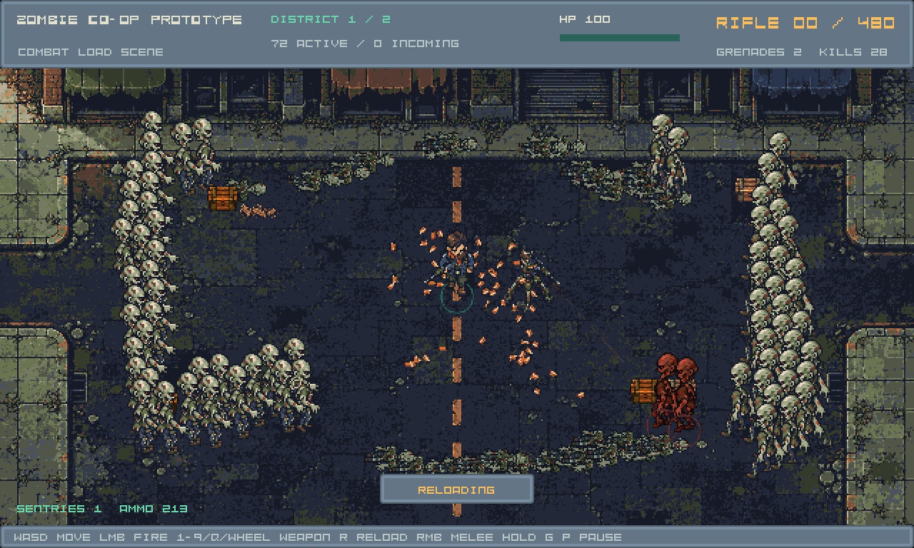
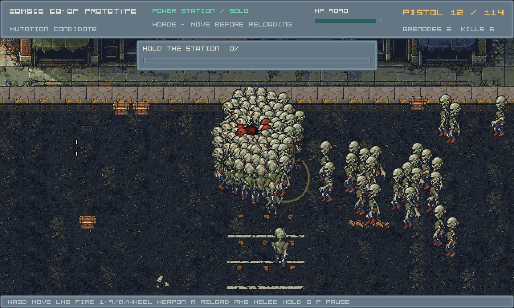
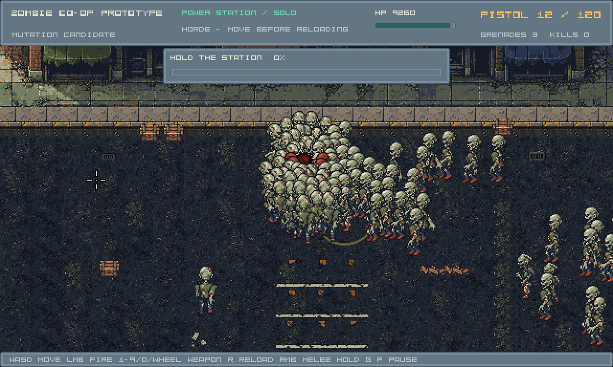
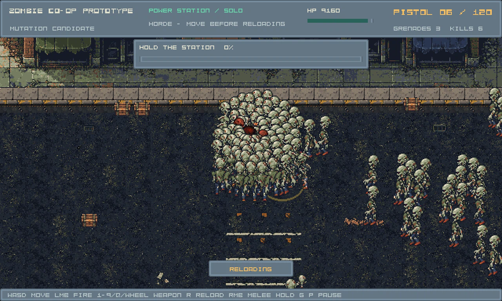
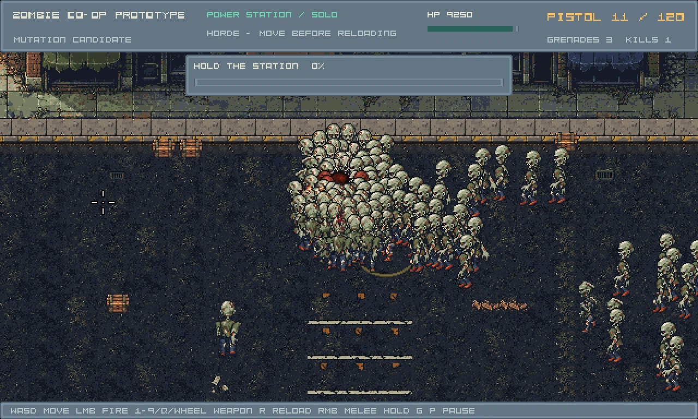
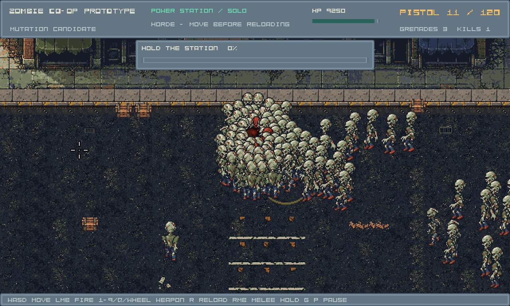
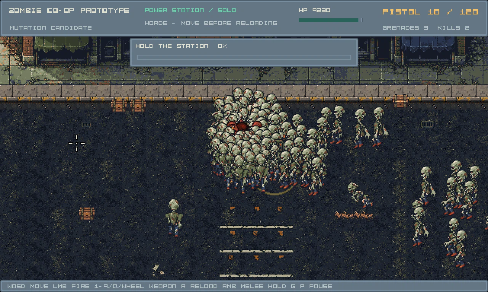
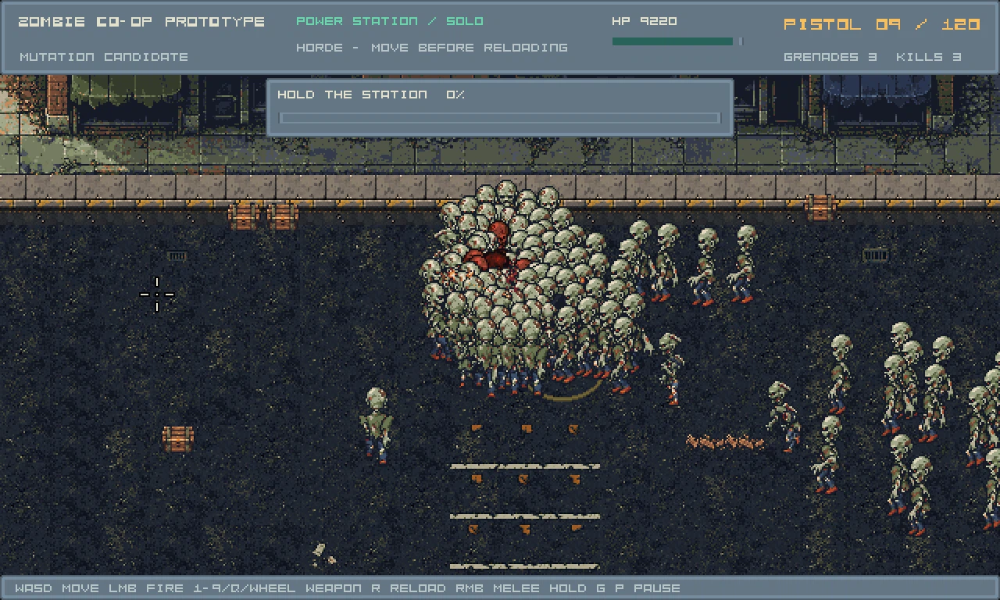
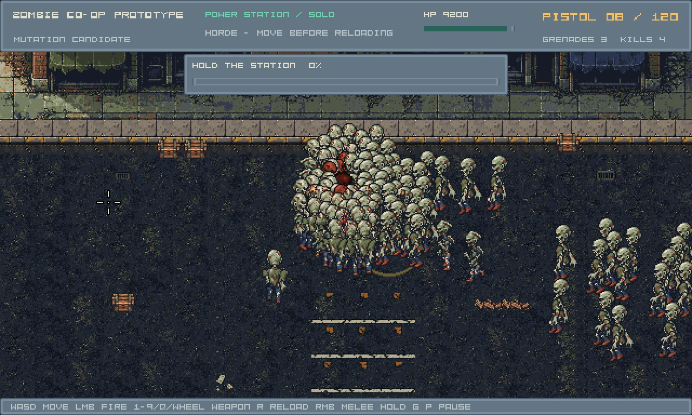
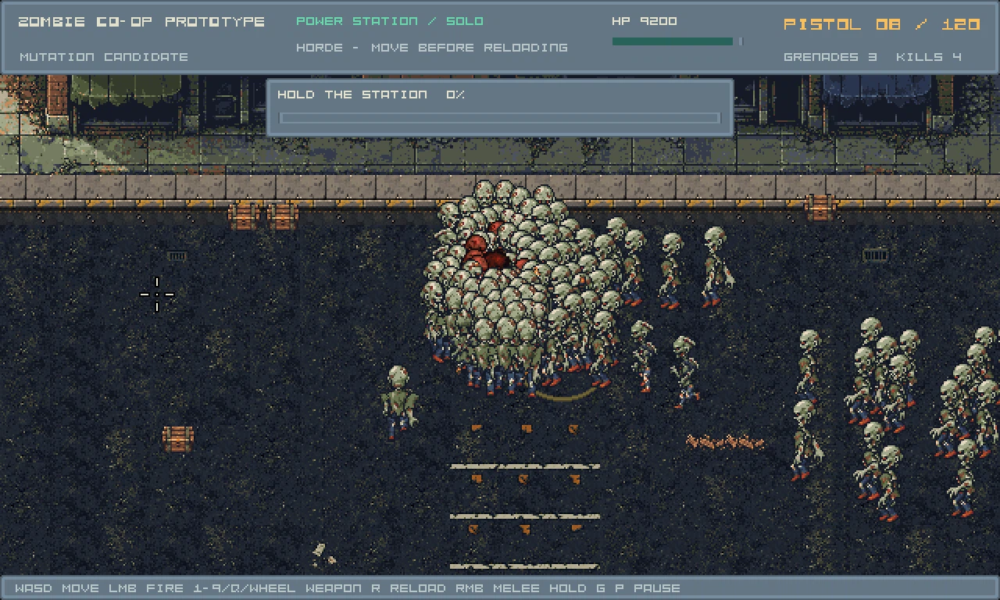
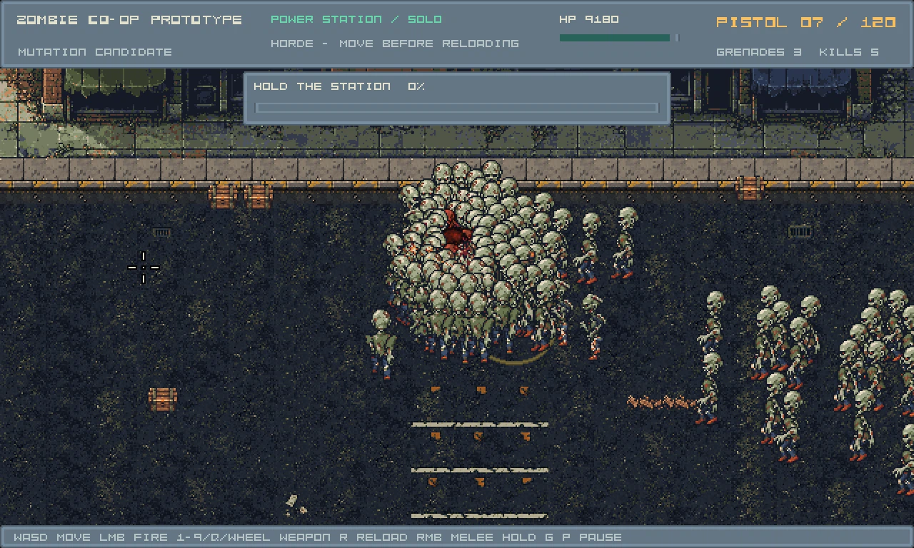
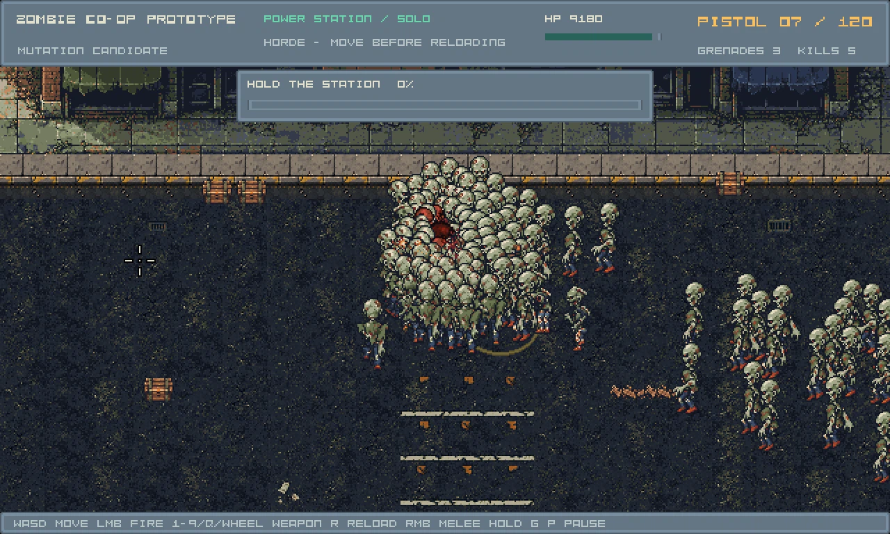
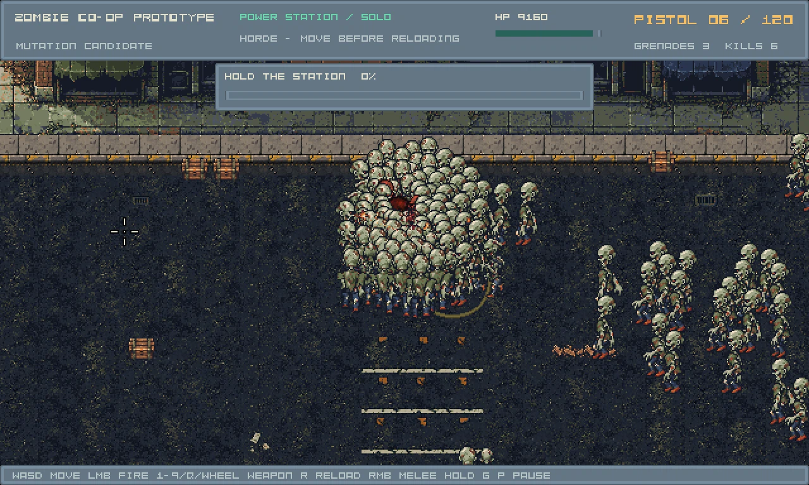
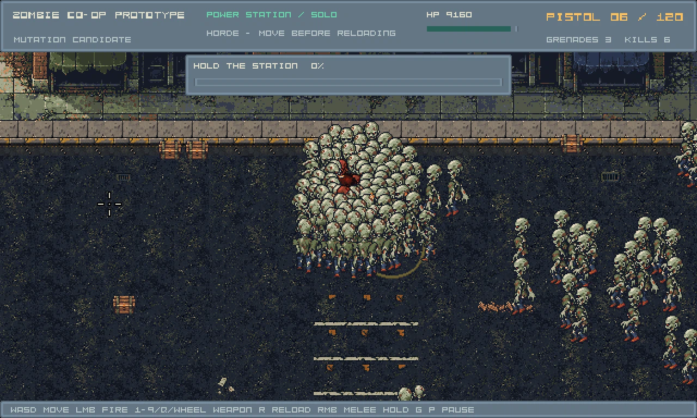
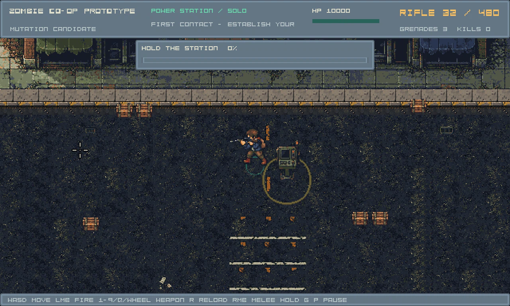